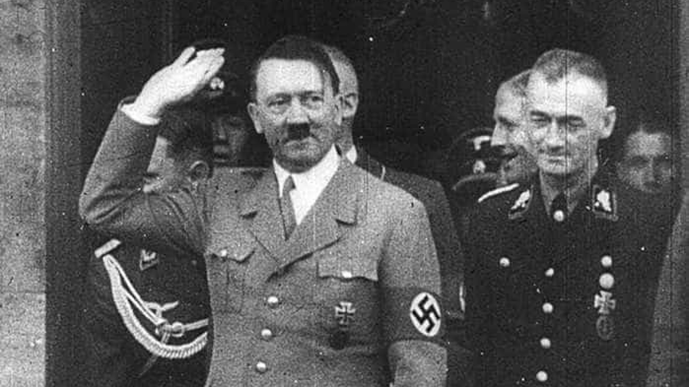
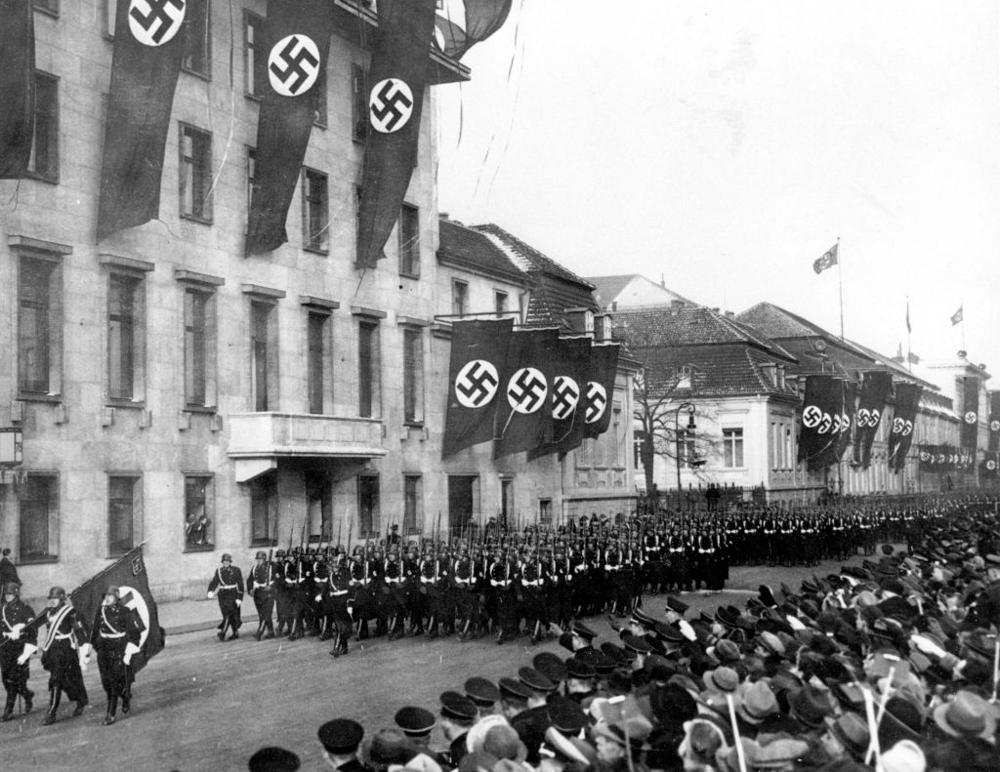

História do Nazismo
O nazismo surgiu na Alemanha nos anos 1920, liderado por Adolf Hitler. Era uma ideologia política e social com elementos nacionalistas, racistas e totalitários. Propagava a "superioridade" da raça ariana e buscava purificar a sociedade alemã, eliminando grupos "inferiores" como judeus, ciganos e homossexuais. A Alemanha se tornou um Estado autoritário sob o regime nazista, com Hitler detendo todo o poder. Durante a Segunda Guerra Mundial, ocorreram atrocidades em larga escala, incluindo o Holocausto, com cerca de seis milhões de judeus assassinados. Em 1945, o nazismo foi derrotado e é amplamente condenado como uma das ideologias mais repugnantes e prejudiciais da história.
Desfiles
Durante o regime nazista na Alemanha, os desfiles eram usados como instrumentos de manipulação e propaganda perniciosa. Sob uma aparência grandiosa, esses eventos promoviam a supremacia racial e difundiam ódio e intolerância. Os desfiles grotescos e intimidadores alimentavam uma ideologia abominável, baseada na discriminação e na violência. Milhares de pessoas eram arrastadas por uma onda de fanatismo, cegas para os horrores que se desenrolavam diante delas. A liderança manipuladora de Adolf Hitler transformava a nação em uma marionete, levando-a a cometer atrocidades inimagináveis. Os desfiles nazistas personificaram um capítulo sombrio e condenável na história da humanidade.


RESPONDA E GANHE UMA CANECA!
Debate Esclarecedor: Desmistificando o Nazismo
Neste intenso vídeo de debate, Robertina emprega argumentos sólidos e fatos históricos para desmontar as bases do nazismo, desafiando Josefino a questionar suas crenças.
Debate Esclarecedor: Desmistificando o Nazismo
Debate Esclarecedor: Desmistificando o Nazismo
Neste intenso vídeo de debate, Robertina emprega argumentos sólidos e fatos históricos para desmontar as bases do nazismo, desafiando Josefino a questionar suas crenças.
Robertina
Há 5 dias
Tenho refletido muito sobre o nazismo ultimamente e estourealmente perplexa com as atrocidades que foram cometidas durante aquele período sombrio dahistória. É difícil entender como alguém poderia ser a favor de algo tão terrível.
82
5
Josefino
Há 5 dias
Entendo sua preocupação, mas eu acredito que é importante analisaro nazismo de uma perspectiva mais ampla. Existem aspectos que alguns indivíduos podem ter encontrado atraentes na época, como onacionalismo e a busca por um senso de identidade.
2
184
Robertina
Há 5 dias
Mas como podemos ignorar os horrores causados pelo nazismo?Milhões de pessoas perderam suas vidas, e a ideologia promovia uma visão racista eintolerante.
68
4
Josefino
Há 5 dias
Você está absolutamente certa em condenar o nazismo pelos seuscrimes hediondos. No entanto, é importante lembrar que nem todas as pessoas que eram a favor do nazismocompartilhavam a mesma visão extrema. Alguns podem ter sido influenciados pela propaganda ou sentiram que estavam defendendoseus interesses nacionais.
12
28
Robertina
Há 5 dias
Mas ainda assim acredito que qualquer forma de discriminaçãoracial ou intolerância é inaceitável. Devemos buscar um mundo onde todos sejam tratados igualmente, independentemente de suaraça ou origem.
78
1
Josefino
Há 5 dias
Concordo plenamente. Aprendemos lições valiosas com os erros do passado, e é crucial trabalharmos juntos para construir uma sociedade inclusiva e respeitosa. Devemos combater o racismo, a intolerância religiosa, o machismo, a transfobia e todas asformas de discriminação.
125
5
Robertina
Há 5 dias
Você está certo. É importante promover a educação e o diálogo, para que as gerações futuras possam compreender a importância da igualdade e do respeitomútuo. Juntos, podemos construir um mundo melhor, onde os erros do passado não se repitam.
45
5
Josefino
Há 5 dias
Absolutamente! Através da conscientização e do compromisso com adiversidade e a inclusão, podemos garantir que as ideologias discriminatórias e prejudiciais, como o nazismo, não tenham espaço em nossa sociedade. Unidos, podemos trabalhar para umfuturo mais justo e compassivo.
168
3